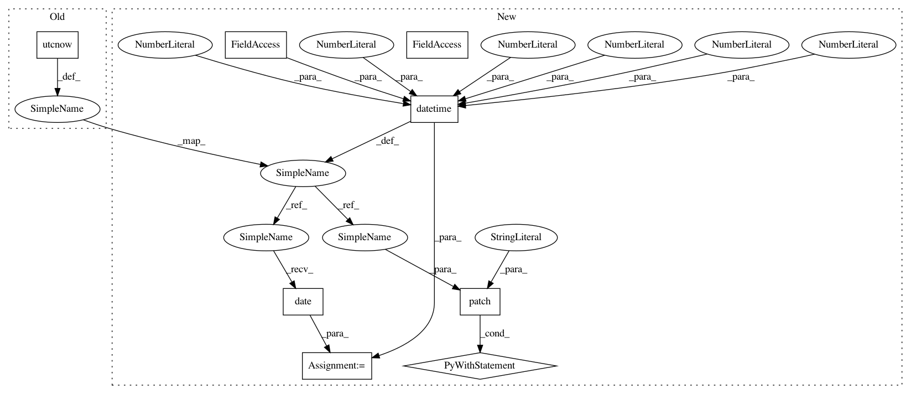

40d27cde0edb705bfa742a2f784d7a67b1d16e81,tests/components/test_sun.py,TestSun,test_setting_rising,#TestSun#,34
Before Change
from astral import Astral
astral = Astral()
utc_now = dt_util.utcnow()
latitude = self.hass.config.latitude
longitude = self.hass.config.longitude
After Change
def test_setting_rising(self):
Test retrieving sun setting and rising.
utc_now = datetime(2016, 11, 1, 8, 0, 0, tzinfo=dt_util.UTC)
with patch("homeassistant.helpers.condition.dt_util.utcnow",
return_value=utc_now):
setup_component(self.hass, sun.DOMAIN, {
sun.DOMAIN: {sun.CONF_ELEVATION: 0}})
self.hass.block_till_done()
state = self.hass.states.get(sun.ENTITY_ID)
from astral import Astral
astral = Astral()
utc_today = utc_now.date()
latitude = self.hass.config.latitude
longitude = self.hass.config.longitude
In pattern: SUPERPATTERN
Frequency: 3
Non-data size: 8
Instances
Project Name: home-assistant/home-assistant
Commit Name: 40d27cde0edb705bfa742a2f784d7a67b1d16e81
Time: 2017-05-09
Author: adam@armills.info
File Name: tests/components/test_sun.py
Class Name: TestSun
Method Name: test_setting_rising
Project Name: home-assistant/home-assistant
Commit Name: 40d27cde0edb705bfa742a2f784d7a67b1d16e81
Time: 2017-05-09
Author: adam@armills.info
File Name: tests/helpers/test_event.py
Class Name: TestEventHelpers
Method Name: test_track_sunrise
Project Name: home-assistant/home-assistant
Commit Name: 40d27cde0edb705bfa742a2f784d7a67b1d16e81
Time: 2017-05-09
Author: adam@armills.info
File Name: tests/components/test_sun.py
Class Name: TestSun
Method Name: test_setting_rising
Project Name: home-assistant/home-assistant
Commit Name: 40d27cde0edb705bfa742a2f784d7a67b1d16e81
Time: 2017-05-09
Author: adam@armills.info
File Name: tests/helpers/test_event.py
Class Name: TestEventHelpers
Method Name: test_track_sunset